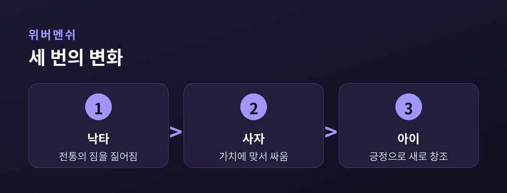

운명을 사랑하라
누구나 지우고 싶은 시간을 하나쯤 품고 산다. 니체는 그 시간마저 사랑하라고 말한다. 체념이 아니라 긍정으로서의 사랑이다. 이 글은 그의 두 개념, 아모르파티와 영원회귀를 정확히 짚어 본다.
아모르파티(amor fati)는 라틴어로 운명에 대한 사랑을 뜻한다. 삶에서 일어나는 모든 일을 필연으로 받아들이는 태도다. 고통과 상실도 예외가 아니다. 니체는 『즐거운 학문』 276절에서 이렇게 적었다.
나는 사물에서 필연적인 것을 아름답게 보는 법을 배우고자 한다. 아모르 파티, 이것이 이제부터 나의 사랑이 되게 하라.
핵심은 좋은 것만 고르지 않는다는 데 있다. 좋음과 나쁨은 떼어 낼 수 없이 얽혀 있다. 그러므로 삶을 사랑한다는 것은 그 어두운 부분까지 함께 끌어안는 일이다.
니체는 하나의 사고실험을 던진다. 『즐거운 학문』 341절, 어느 밤 악령이 찾아와 말한다. 네가 살아온 이 삶을 조금도 다르지 않게, 무수히 반복해 다시 살아야 한다고. 이것이 영원회귀다.
이 물음 앞에서 사람은 갈린다. 저주로 여겨 이를 갈 것인가, 아니면 그 반복을 갈망할 것인가. 니체는 후자를 요구한다. 다시 살아도 좋다고 말할 수 있는 삶, 그 삶을 지금 살라는 것이다. 영원회귀는 우주의 사실을 증명하려는 이론이 아니라, 매 순간의 무게를 되묻는 저울에 가깝다.
『차라투스트라는 이렇게 말했다』에서 니체는 자기극복의 인간, 위버멘쉬를 그린다. 그 길은 세 번의 변화로 요약된다.
낙타는 짐을 지고, 사자는 맞서 싸우며, 아이는 새로 시작한다.
낙타는 전통의 무게를 짊어지고, 사자는 그 가치에 맞서며, 아이는 순수한 긍정으로 자기 삶을 새로 창조한다. 운명을 사랑한다는 것은 체념이 아니라 이 아이의 자리에 서는 일이다.

예전엔 견디는 것이 강함이라 여겼다. 지금은 견디는 것을 넘어 긍정하는 것이 더 어려운 강함임을 안다. 스토아가 평정을 위해 받아들였다면, 니체는 그 필연을 사랑하라고 밀어붙인다.
물론 이 사상에는 긴장이 있다. 운명을 사랑하라는 수용과, 자기를 창조하라는 능동은 쉽게 화해하지 않는다. 그러나 그 긴장이야말로 이 철학을 살아 있게 한다. 받아들이되 주저앉지 않는 태도, 그 사이 어딘가에 삶의 몫이 있다.
운명을 바꿀 수 없다면, 남은 자유는 그것을 어떻게 대할 것인가에 있다.
— 다시 살아도 좋다고 말할 수 있는 하루를, 오늘 살아 볼 일이다.